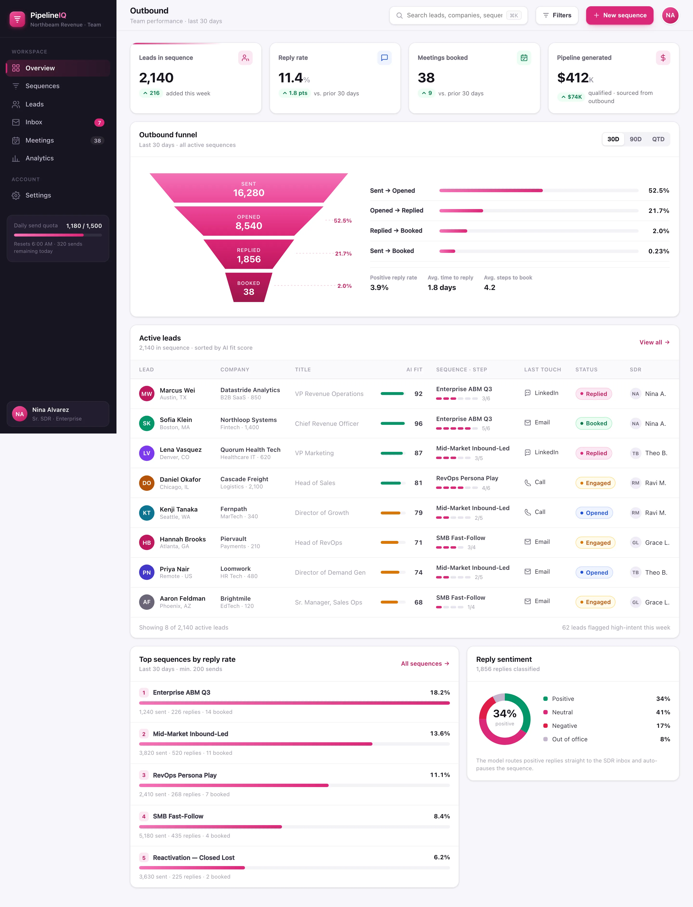
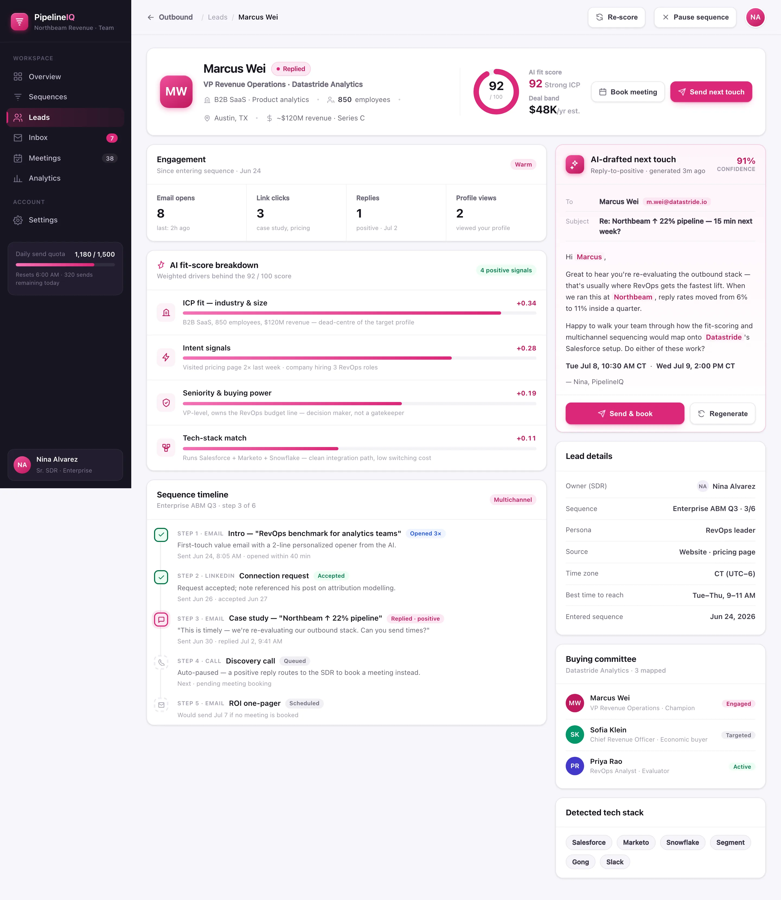

Score
Every lead is graded 0–100 for fit the moment it lands, using ICP, intent, seniority and tech-stack signals — worst-first triage, gone.
PipelineIQ scores every lead for fit, runs multichannel sequences across email, LinkedIn and call, drafts the replies, and books the meeting straight onto your reps' calendars.
PipelineIQ grades every lead 0–100 the moment it lands — so your reps spend their sends on the accounts most likely to buy, not the loudest list.
Industry, headcount and revenue matched against the profile of accounts that actually close.
Pricing-page visits, content engagement and hiring signals that say a team is in-market now.
Title and buying power — is this the decision maker who owns the budget, or a gatekeeper?
Detected tools that signal a clean integration path and a low cost to switch.
Every fit score decomposes into the signals that produced it — with weights, not gut feel. Here's how one strong-fit lead breaks down.
PipelineIQ closes the loop from cold contact to booked meeting, so your reps do the talking and the engine does the chasing.
Every lead is graded 0–100 for fit the moment it lands, using ICP, intent, seniority and tech-stack signals — worst-first triage, gone.
Multichannel sequences fire across email, LinkedIn and call — timed, personalized, and paused the instant someone replies.
The model drafts the reply that moves the deal forward and books the meeting straight onto your rep's calendar — with a confidence score attached.
BuildspaceLabs built the MVP front end: an Outbound board for the whole team's funnel and a per-lead detail view for the SDR working the deal.
Live reply-rate, meetings-booked and pipeline KPIs sit above the Sent → Opened → Replied → Booked funnel and a lead table ranked by AI fit.

A 92/100 fit ring, a weighted fit-score breakdown, a multichannel sequence timeline and an AI-drafted next touch — all on one file.

Fit scoring, multichannel sequencing and AI reply drafting consolidated into one SDR surface — nothing stuck in a spreadsheet or a second tool.
Sent → Opened → Replied → Booked with live stage-to-stage conversion above the team's KPIs.
A 0–100 fit score per lead across ICP, intent, seniority and tech-stack signals — refreshed as new signals land.
Email, LinkedIn and call woven into one timed flow, personalized per lead and auto-paused on reply.
The next touch written for you — grounded in the thread and the lead's signals, with a confidence score.
Positive replies are classified, routed straight to the SDR inbox and the sequence pauses automatically.
Fit breakdown, engagement signals, sequence timeline and the mapped buying committee on one screen.
Blasting a list burns your domain and your reps. PipelineIQ scores fit before it sends, sequences only the leads worth the touch, and shows the weighted reason behind every score.
Delivered as a production-quality MVP in an eight-week engagement.
We build AI-native products like PipelineIQ. Tell us about your outbound motion and we'll show you what a fit-scored, self-sequencing engine looks like on your leads.